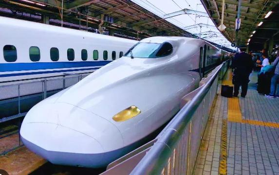
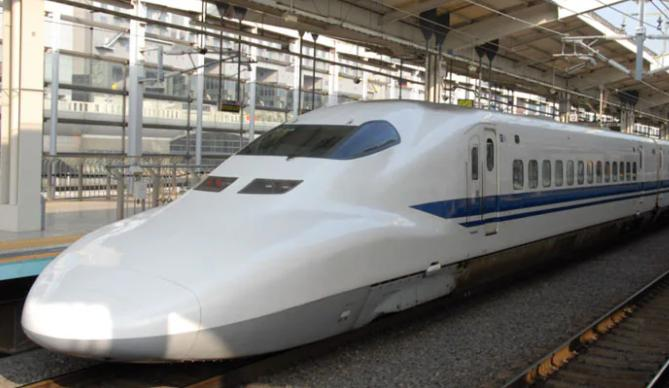
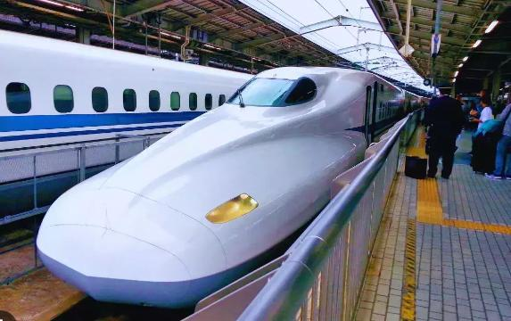
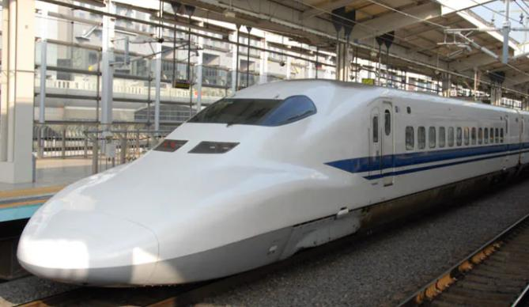

JR Shinkansen, известен като влак-стрела, е емблематичната високоскоростна железопътна мрежа на Япония, известна със своята скорост, ефективност и точност. Стартиран през 1964 г., Shinkansen свързва големите метрополни зони, включително Токио, Осака и Нагоя,
улеснявайки безпроблемното пътуване из цялата страна. Влаковете се движат със скорости
до 320 km/h, което значително намалява времето за пътуване между градовете.
Shinkansen се слави със своите рекорди за безопасност, с нула произшествия от самото начало, и впечатляващата си точност, средно закъснения от само 0,9 минути. Мрежата
включва различни услуги, като побира над 229 000 пътници дневно с 336 влакови услуги. Пътниците се радват на модерни удобства, включително удобни места за сядане,
освежителни напитки на борда и просторен интериор, което прави пътуването не
само бързо, но и приятно.
Shinkansen се превърна в символ на технологичния напредък на Япония и е жизненоважен компонент от транспортната инфраструктура на страната, насърчавайки туризма и икономическия растеж, като същевременно демонстрира ангажимента на Япония
към иновациите в железопътния транспорт.